On receivers that support multi-room, AVR Maestro lists every speaker, lets you group and ungroup them, sets one volume for a group and browses, searches and queues music for it. This guide walks through every part of the screen.
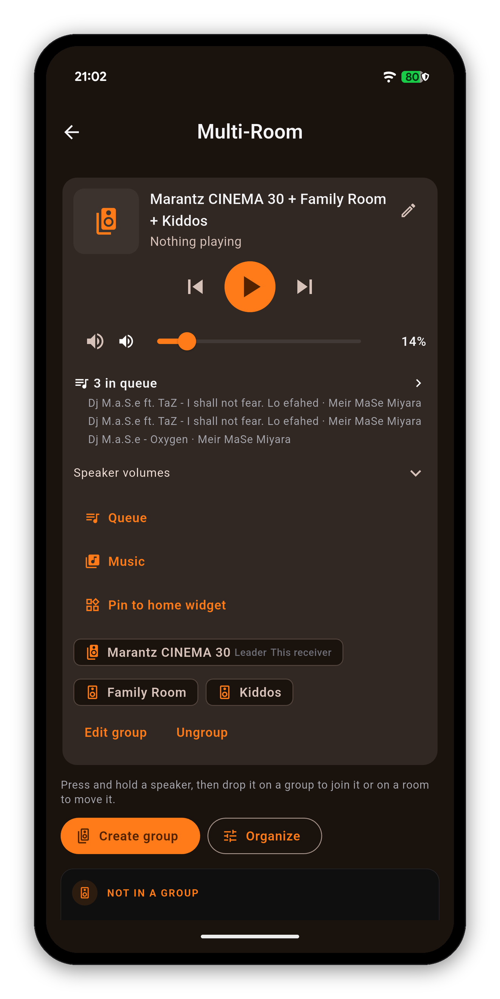
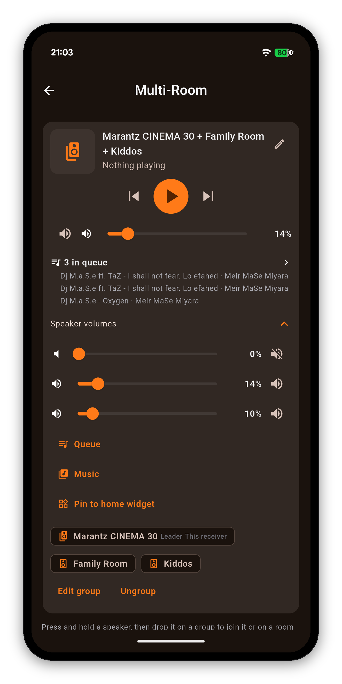
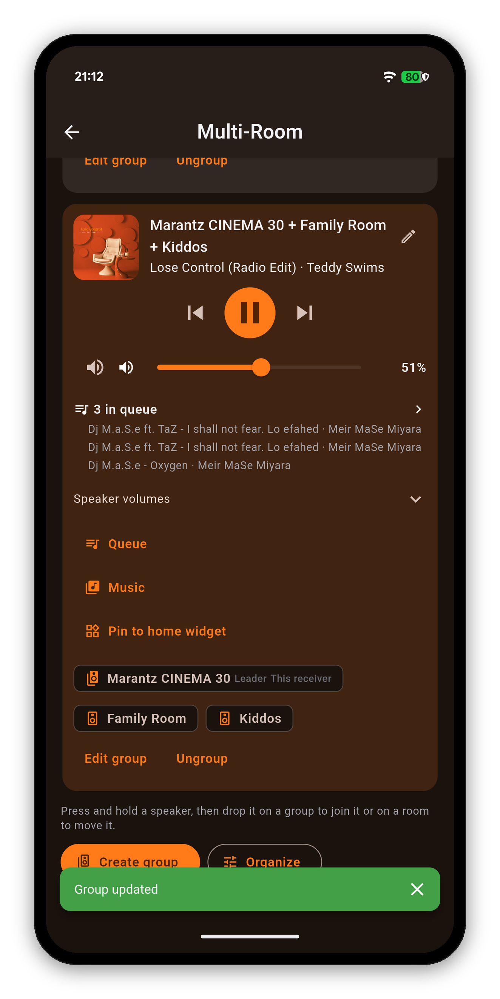
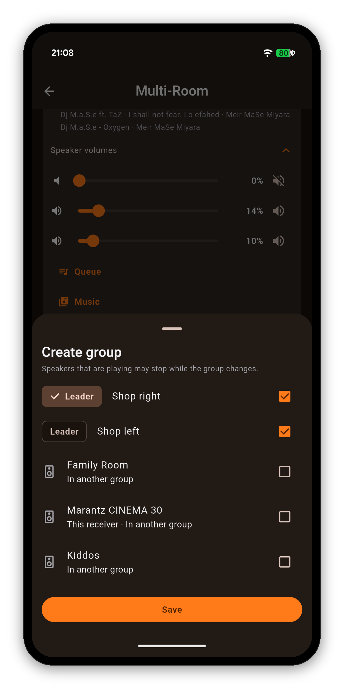
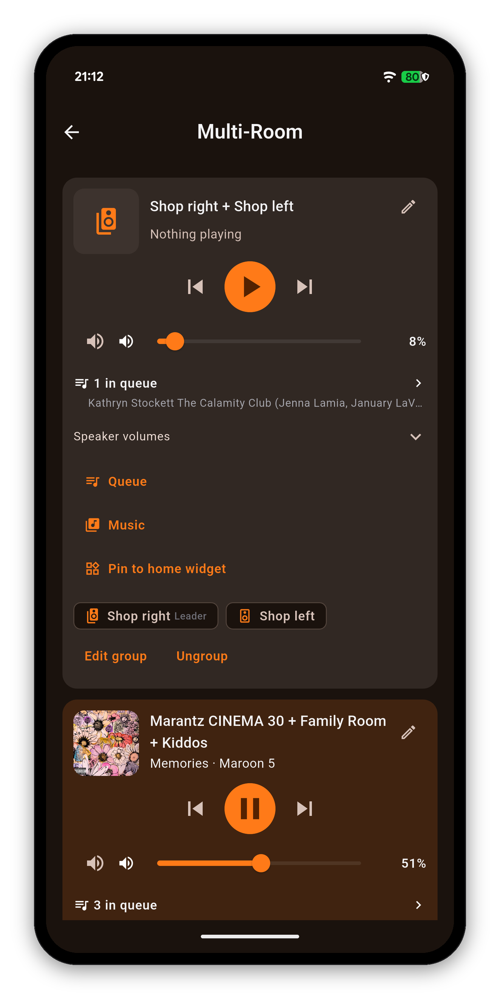
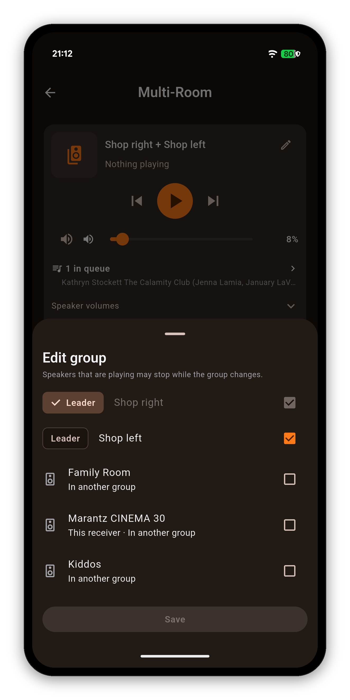
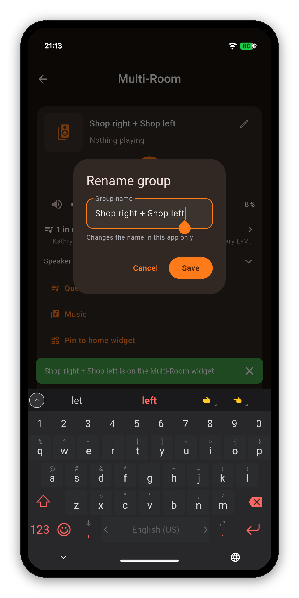
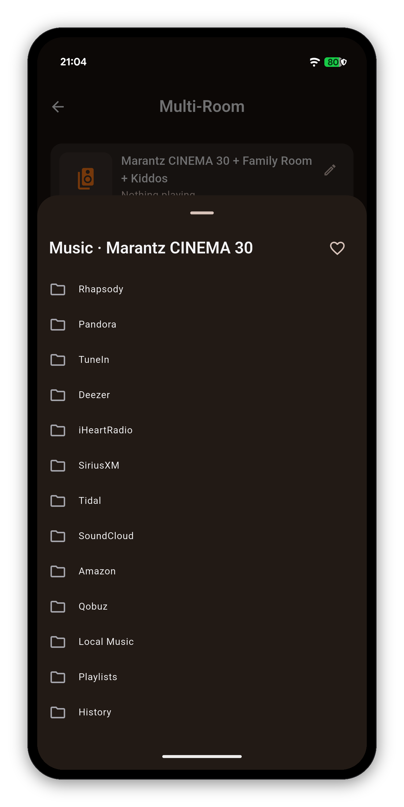
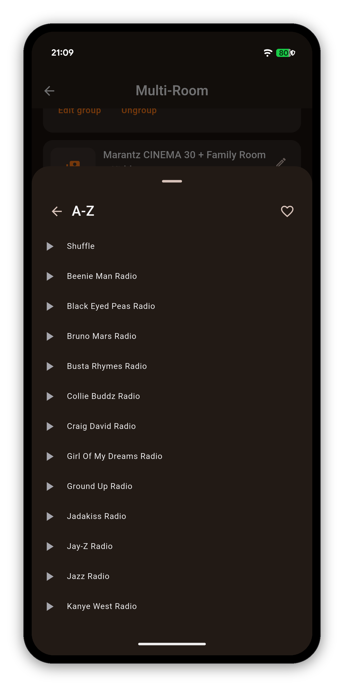
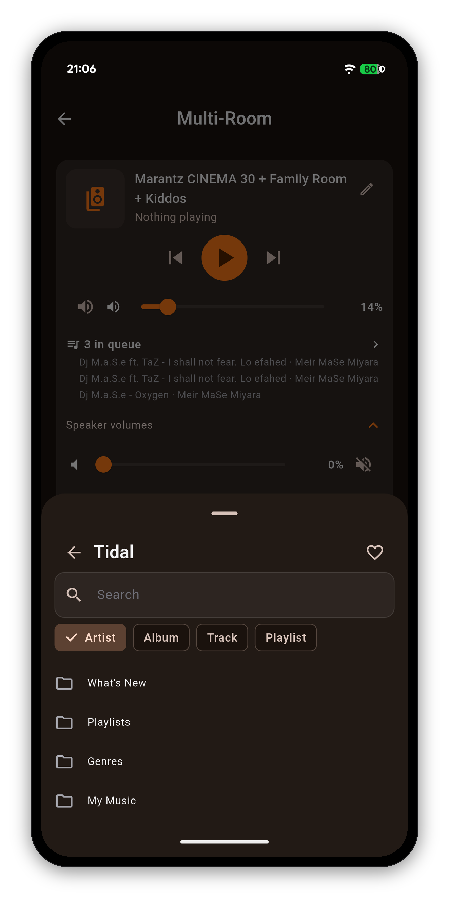
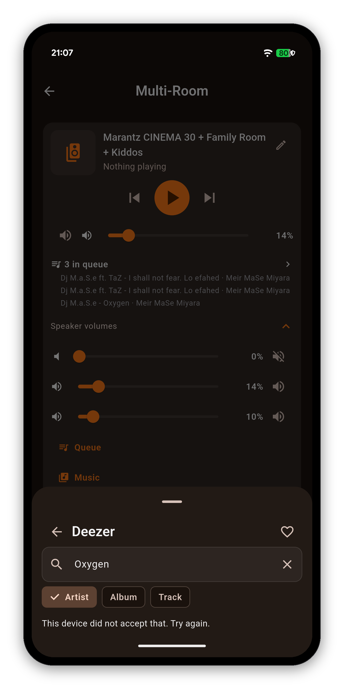
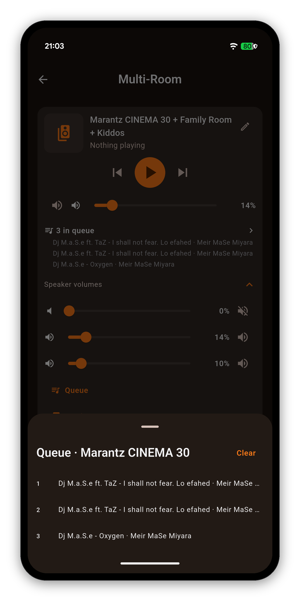
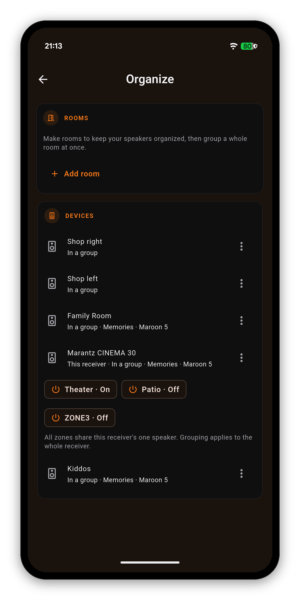
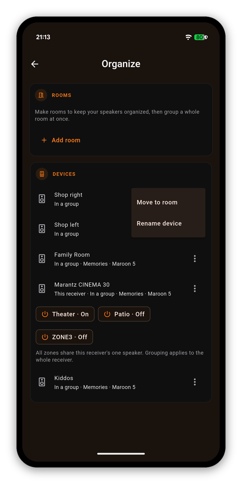
Getting started · Manage receivers · Navigating the app · Search · Home Screen · Volume Controls · Remote · Zones · Multi-Room · Now Playing & HEOS · Scenes · Sound · Graphic EQ · Speakers · Why a control is locked · Settings · Widgets · Custom Icons · On-Screen Display · Languages · The Assistant · Home Automation · Home Assistant dashboard · Backup & Restore · Glossary
One-time purchase, no ads, no subscriptions. Connect in under a minute.